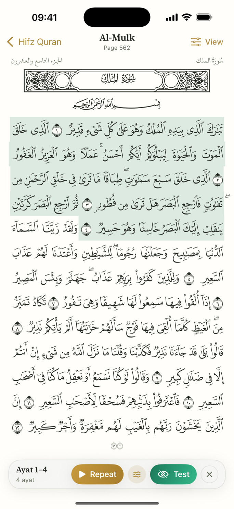
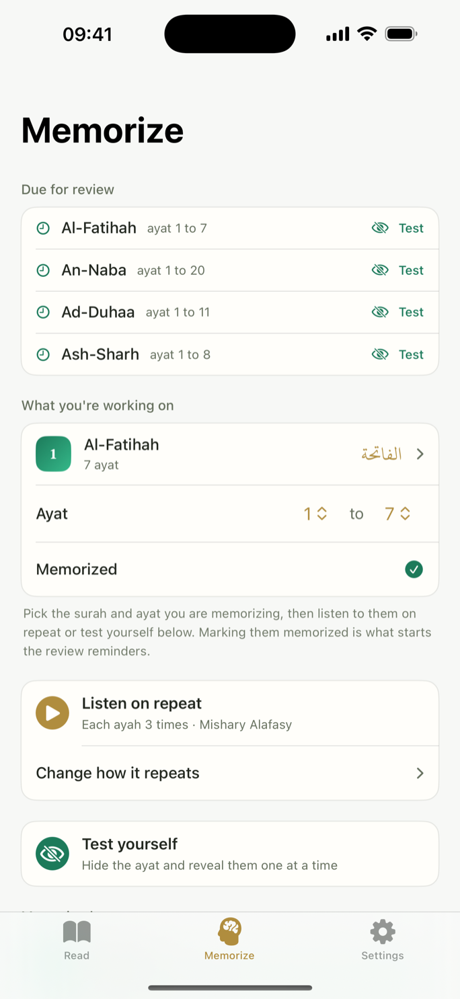
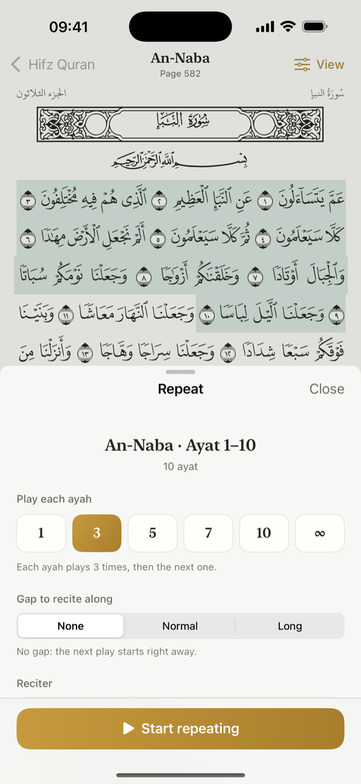
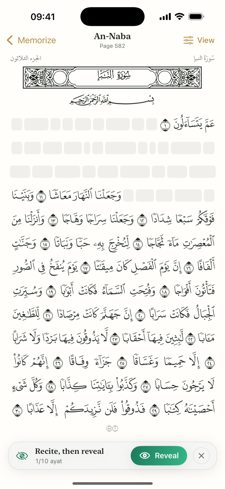
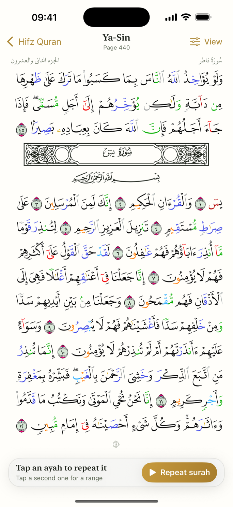

For iPhone
Repeat, test,
remember.
The Quran app for those who want to memorize it. Pick any ayah, repeat it as much as you need, and test yourself when you are ready.
Free on iPhone · iOS 17 or later · No account, no ads, no permissions.
How it works
Memorize a page in three steps.
Pick your passage
Tap an ayah to set the start, tap another to set the end. That is what you are working on.
Repeat it
Play it back with a reciter. Set how many times each ayah repeats, chain them together, and leave a gap to recite along.
Test yourself
Hide the ayat on the page, recite each one from memory, then reveal it to check.
Inside the app
Choose an ayah and repeat it
The heart of the app. Pick any ayah or passage and repeat it: set how many times each ayah plays, chain them together, and leave a gap to recite along. Ten reciters, works offline, and keeps going with the screen locked.
The real Madina mushaf
Every page matches the printed 1441H Madina mushaf: same layout, same fonts, same fifteen lines, same ornamental surah bands. Page 47 in the app is page 47 in print. Plain or tajweed-colored, both the same edition.
Hide it, then check yourself
The ayat you are working on go blank on the page. Recite each one from memory, tap Reveal to check it, then mark the run solid or shaky. No microphone, no recording. Just you and the page.
Spaced repetition
What you have memorized comes due on its own schedule, and how the last test went sets when. The Memorize tab lists what is ready today, one tap from a test.
Ten translations, three scripts
Read in Madina, tajweed-colored, or Indopak script, with a translation under each ayah if you want one. Ten are included and work offline: English, Bengali, Urdu, French, Spanish, Indonesian, Turkish and Russian.
No account, no ads
No permissions: no microphone, no speech recognition, none at all. No account, no subscription, no ads, no analytics. Your progress stays on your iPhone.
A look inside
What it looks like.
A few screens from inside.





The promise
Free for you.
Free, with no account to make and no permissions to grant. No microphone, no speech recognition, no camera, no contacts, no location. No analytics, no advertising, and no servers of ours. The only thing fetched from the internet is recitation audio. Your progress stays on your iPhone. Read the full privacy policy.
With thanks
Built on the work of others.
The mushaf text, layout, and fonts come from the King Fahd Glorious Quran Printing Complex and the Quranic Universal Library. The recitations are by well-known reciters, and the translations are the work of their translators. Hifz Quran is free, and these sources are credited with thanks.